Preparación de Unidades
Mediante las tablas de Configuración de Unidades se determina la configuración completa de todas las unidades que podrán participar en un Ejercicio. Se especifican por tanto entre otros parámetros, la plataforma de la unidad y todos los equipos (sensores, armas, comunicaciones y contramedidas) que instala.
La cantidad máxima de equipos de cada tipo que puede instalar una unidad depende del tipo de la misma, como se resume en la siguiente tabla:
| Sensores | SF | SB | AV | HE | BA | TE |
| Radar | 8 | 8 | 2 | 2 | 8 | 8 |
| IFF / SIF | 1 | 1 | 1 | 1 | 1 | 1 |
| Infrarrojo | 1 | 1 | 1 | 1 | 1 | 1 |
| ESM | 1 | 1 | 1 | 1 | 1 | 1 |
| TACAN | 1 | 1 | 1 | 1 | 1 | 1 |
| Sonar Activo | 2 | 2 | 1 | 1 | 0 | 0 |
| Sonar Pasivo | 3 | 3 | 1 | 1 | 0 | 0 |
| Lanzador Sonob. | 0 | 0 | 4 | 4 | 0 | 0 |
| Procesador Sonob. | 1 | 0 | 1 | 1 | 0 | 0 |
| MAD | 0 | 0 | 1 | 1 | 0 | 0 |
| AIS | 1 | 1 | 1 | 1 | 1 | 1 |
| Armas | SF | SB | AV | HE | BA | TE |
| Conf. Armas | 0 | 0 | 5 | 5 | 0 | 0 |
| Misiles | 5 | 5 | 5 | 5 | 5 | 5 |
| Torpedos | 3 | 3 | 3 | 3 | 0 | 0 |
| ASROC | 3 | 3 | 0 | 0 | 0 | 0 |
| Cañones | 4 | 4 | 2 | 2 | 4 | 4 |
| Cargas Prof. | 2 | 3 | 0 | 0 | 0 | 0 |
| Bombas | 0 | 0 | 3 | 3 | 0 | 0 |
| Contramedidas | SF | SB | AV | HE | BA | TE |
| Chaff | 3 | 3 | 2 | 2 | 0 | 0 |
| ECM | 1 | 1 | 1 | 1 | 1 | 1 |
| COMSM | 1 | 1 | 1 | 1 | 1 | 1 |
| Productor Ruido | 1 | 1 | 0 | 0 | 0 | 0 |
| Señuelos | 0 | 2 | 0 | 0 | 0 | 0 |
| Comunicaciones | SF | SB | AV | HE | BA | TE |
| Link 11 | 3 | 3 | 3 | 3 | 3 | 3 |
| Link 16 | 3 | 3 | 3 | 3 | 3 | 3 |
| Data Link | 1 | 1 | 1 | 1 | 1 | 1 |
| Mensajería | 4 | 4 | 4 | 4 | 4 | 4 |
| Fonía | 6 | 6 | 6 | 6 | 6 | 6 |
| Satélite | 1 | 1 | 1 | 1 | 1 | 1 |
Para cada uno de los equipos que se instalan en la unidad, y dependiendo del tipo de equipo, se deberán especificar los datos característicos de su instalación, tales como sectores activos de sensores o direcciones de tiro asociadas a las armas, cantidades disponibles en pañol para cada arma y otras características de los lanzadores de armas.
Descripción de los parámetros de Configuración de Unidades:
Dependiendo del tipo de Unidad se despliega una ventana diferente, aunque existe en todas ellas un área común donde se define la unidad. En la figura siguiente se muestra, como ejemplo, la ventana de configuración para unidades de superficie. A continuación se describen estos campos, que son comunes a todos los tipos de unidad.
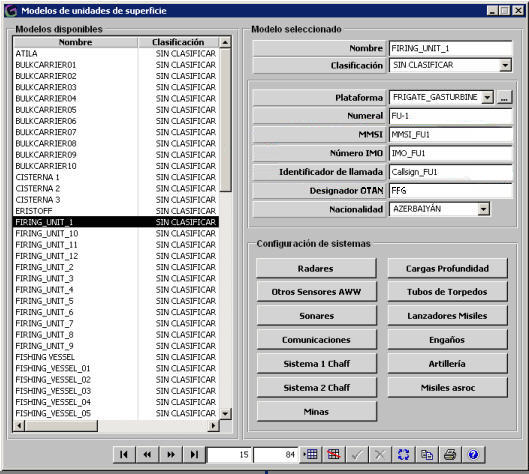
Plataforma: Este parámetro determina la plataforma asociada a esta unidad, según el Tipo de unidad. Ver apartados Plataformas Superficies, Plataformas Submarinos, Plataformas Aviones, Plataformas Helicópteros, Plataformas Bases o Plataformas Terrestres.
Numeral: Este parámetro determina el numeral de la unidad, el cual es tenido en cuenta como un identificador único de las unidades. Es usado en varias ventanas de instructor y alumno para designar la unidad sobre la que se quiere realizar una acción concreta (Ir a Base, Control de Unidad,...). Debe ser introducido obligatoriamente. Este campo está limitado a 5 caracteres alfanuméricos.
MMSI: Este parámetro determina el MMSI (maritime mobile service identities) de la unidad.
Número IMO: Este parámetro determina el Número IMO de las unidades de superficie y submarinas.
Identificador de Llamada: Este parámetro determina el identificador de llamada de la unidad (callsign).
Designador OTAN: Este parámetro determina el designador OTAN, el cual es asignado a las unidades sólo a título ilustrativo, y puede ser dejado en blanco. Este campo está limitado a 5 caracteres alfanuméricos.
Nacionalidad: Este parámetro determina la nacionalidad de la unidad, la cual se asigna sólo a título ilustrativo, y puede ser dejado en blanco. El valor de este campo se selecciona de una lista. Una vez seleccionada una nacionalidad, a la derecha de este campo se muestra un icono de la bandera representativa de la misma. Esta bandera puede ser mostrada en la Presentación Táctica de las Consolas de Instructor junto la traza de cada unidad.
Descripción de los parámetros de Configuración de Sistemas:
Dependiendo del tipo de unidad, podrán instalarse diferentes equipos, que aparecen listados en la ventana de configuración de cada unidad. Junto a la etiqueta correspondiente a cada tipo de equipo existe un botón con la leyenda “...”, que despliega una ventana de instalación para dicho tipo de equipos. A continuación se describe cada una de estas ventanas, indicando en qué tipo de unidades puede instalarse.
Radares: Se pueden instalar radares en todos los tipos de unidad, aunque en el caso de las aéreas y helicópteros, se agrupan con otros sensores bajo el nombre de sensores aéreos. En esta área de datos se especifican todos los equipos radar instalados en la unidad. El número de radares a instalar varía dependiendo del tipo de unidad donde vayan a ser instalados. Para cada radar deberá elegirse el nombre del sensor (de la lista de radares disponible), el sector en que operará dicho radar y la orientación en la que se instala.
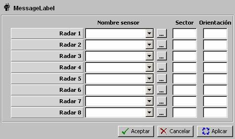
Otros Sensores AWW: Esta opción agrupa una serie de sensores que pueden instalarse en todas las unidades, excepto en aéreas y helicópteros, donde la ordenación de estos datos es diferente. Estos sensores son Infrarrojo, NVG, ESM, COMSM, AIS, IFF y TACAN. En esta área de datos se especifican todos los equipos de este tipo instalados en la unidad. Para los equipos Sensor IR, NVG, ESM y COMSM deberá elegirse el nombre del sensor (de la lista de sensores disponibles de cada tipo), el sector en que operará dicho sensor y la orientación en la que se instala.
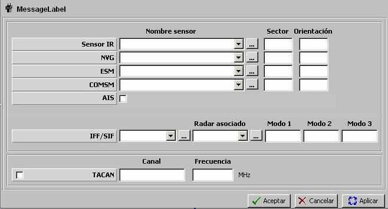
Para el resto de los sensores que aparecen en esta ventana, la descripción de los campos es la siguiente:
AIS: Esta parámetro determina si la unidad dispone de equipo AIS.
IFF / SIF: Equipo IFF instalado en la unidad, a elegir de la lista de equipos IFF disponibles.
Radar Asociado: Radar asociado al equipo IFF. Podrá ser seleccionado de entre los radares aéreos instalados en la unidad. Este parámetro debe ser introducido obligatoriamente si el IFF seleccionado tiene Capacidad Interrogador.
Modo 1: Código Modo 1 característico del equipo IFF (2 dígitos en octal).
Modo 2: Código Modo 2 característico del equipo IFF (4 dígitos en octal).
Modo 3: Código Modo 3 característico del equipo IFF (4 dígitos en octal).
TACAN: En esta área se especifican los siguientes parámetros:
Tacan: Esta parámetro determina si la unidad dispone de equipo TACAN instalado.
Canal: Este parámetro determina el canal en el que transmite el equipo TACAN.
Unidades: ---
Rango: 00X – 99Y
Frecuencia: Este parámetro determina la frecuencia en el que transmite el equipo TACAN. Es tenido en cuenta por el modelo de ESM para determinar si detecta emisiones del equipo TACAN.
Unidades: MHz
Rango: 0 – 99999
Sonares: Se pueden instalar sonares en todos los tipos de unidad, excepto en las terrestres y bases, aunque en el caso de las aéreas y helicópteros, se agrupan con otros sensores bajo el nombre de sensores aéreos. En esta área de datos se especifican todos los equipos sonar, tanto activos como pasivos, instalados en la unidad. El número de sonares a instalar varía dependiendo del tipo de unidad donde vayan a ser instalados. Para cada sonar deberá elegirse el nombre del sensor de la lista de sonares disponible.
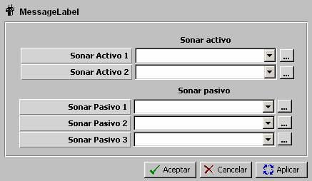
Conjunto Comunicaciones: En esta área de datos se especifican todas las capacidades de comunicaciones tácticas de las que dispone la unidad. Esta ventana es idéntica para todos los tipos de unidad, y las opciones de instalación de equipos que incluye son las siguientes
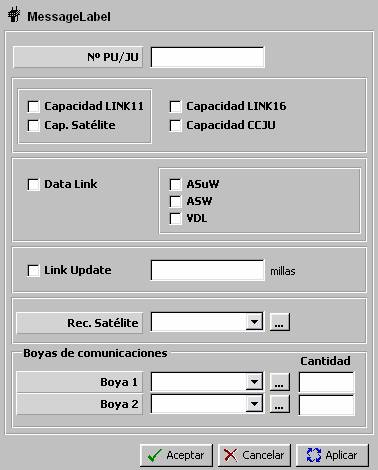
- Si se seleccionó Link 11 el rango válido será:
00001 – 00076 (en octal) - Si se seleccionó Link 16 y C2JU (no Link11) los rangos válidos serán:
00001 – 00076 ó 00100 – 00175 ó 00200 – 77776 (en octal) - Si seleccionó solo Link 16 (ni Link11, ni C2JU) el rango válido será:
00200 ‑ 77776 (en octal)
Nº de PU/FJU: Este parámetro determina un identificador único de la unidad para todas las redes Link-11 o Link-16 de las que forme parte. Se comprobará la validez de este identificador según los siguientes rangos:
Capacidad Link 11: Este parámetro determina si la unidad dispone de equipo Link-11, con lo cual podrá formar parte de las redes de Link-11 de su bando. Ver apartado Planes de Frecuencia.
Capacidad Link 16: Este parámetro determina si la unidad dispone de equipo Link-16, con lo cual podrá formar parte de las redes de Link-16 de su bando. Ver apartado Planes de Frecuencia.
Capacidad C2JU: Este parámetro determina si la unidad tiene capacidad de “Command and Control JU”, es decir, de ser controladora de las redes Link-16 de las que forme parte.
Data Link: Este parámetro determina si la unidad dispone de equipo de Data Link. Puede ser de los siguientes tipos:
ASUW / ASW: Estos parámetros determinan si el equipo de Data-Link puede ser configurado en modo ASUW y/o ASW, en cuyo caso el Data-Link podrá emplearse en modo “Misión ASUW” (enlace orientado al envío automático de contactos Radar de la aeronave) y/o “Misión ASW” (enlace orientado al envío automático de contactos Sonar de la aeronave). Sólo podrán ser seleccionados si no se ha seleccionado Tipo VDL.
VDL: Este parámetro determina si el equipo de Data-Link es tipo VDL (Video Data Link), en cuyo caso los contactos se transmiten desde la aeronave por selección del operador.
Link Update: Este parámetro determina si la unidad tiene capacidad de asignar o actualizar los datos del blanco de un misil lanzado por otra unidad.
(Alcance Link Update): Máximo distancia a la que la unidad puede realizar “Link Update” sobre un misil en vuelo.
Receptor Satélite: Este parámetro determina el receptor satélite instalado en la unidad.
Boyas de Comunicaciones: Estos parámetros determinan los tipos de Boyas de Comunicaciones, indicando la cantidad de cada tipo, de las que dispone la unidad. Sólo podrán ser introducidos si la unidad es de tipo Submarino.
Sistema 1 / 2 Lanzamiento Chaff: Esta instalación es exclusiva para unidades de superficie. Las unidades aéreas y helicópteros también tienen la posibilidad de instalar Chaffs, pero lo hacen de una forma diferente. A continuación se describe cada uno de los campos de esta ventana.
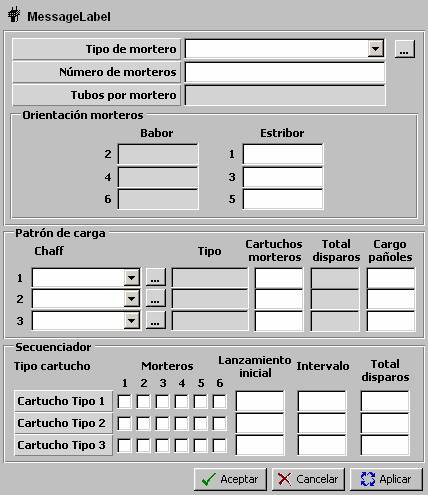
Tipo de Mortero: Este parámetro determina el tipo de mortero que compone el sistema de lanzamiento de Chaff. Ver apartado Mortero Chaff.
Nº de Morteros: Este parámetro determina el número de morteros del tipo indicado que compone el sistema de lanzamiento de chaff.
Unidades: ---
Rango: 2 – 6
Tubos por Mortero: Este parámetro es no editable y muestra el número de tubos que tiene un mortero del tipo seleccionado. Ver apartado Mortero Chaff.
Orientación (Babor 2, 4 y 6, Estribor 1, 3 y 5): Estos parámetros determinan las orientaciones en las que se encuentran los morteros del sistema de lanzamiento chaff. Las orientaciones se expresan respecto a proa, y se considera una instalación simétrica por lo que sólo es editable una columna.
Unidades: grados
Rango: 0 – 180
Patrón de Carga: Mediante los parámetros del patrón de carga se especifican los tipos de cartuchos chaff que pueden ser lanzados por el lanzador de chaff, especificando para cada tipo el número de cartuchos que se pueden cargar por mortero, así como el número de cartuchos de cada tipo de los que dispone la unidad en el pañol:
Chaff:Este parámetro determinan los tipos de cartuchos chaff que pueden ser lanzados por el sistema de lanzamiento de chaff. Los cartuchos chaff aquí seleccionados deberán pertenecer al mismo grupo de compatibilidad. Ver apartado Cartucho Chaff.
Grupo 1: D, S, C, B, IR
Grupo 2: IR, RF, RF+IR
Si el patron de carga se define con cartuchos del grupo 1 cada cartucho debe ser de un tipo distinto. Por el contrario, si el patrón de carga se define con cartuchos del grupo 2 se puede definir el patrón con cartuchos del mismo tipo.
Tipo: Este parámetro no es editable, y muestra el tipo de chaff (D, S, C, B, IR, RF, RF+IR) en función del tipo de cartucho chaff correspondiente. Ver apartado Cartucho Chaff.
Cartuchos por Mortero: Este parámetro determina el número de cartuchos chaff del tipo correspondiente que pueden ser cargados en cada mortero. La suma del número de cartuchos por mortero de los tres tipos de chaff debe coincidir con el número de tubos por mortero.
Unidades: ---
Rango: 1 – 99
Total Disparos: Este parámetro es no editable, y muestra el número total de submuniciones en el mortero en función del tipo de cartucho chaff correspondiente y del número de cartuchos por mortero. Ver apartado Cartucho Chaff.
Cargo Pañoles: Este parámetro determina el número de cartuchos chaff del tipo correspondiente disponibles en el pañol de la unidad.
Unidades: ---
Rango: 0 – 999
Secuenciador: Mediante los parámetros del secuenciador se caracterizan los lanzamientos automáticos según el tipo de cartuchos:
Morteros / Tipo Cartucho: Mediante esta matriz se especifican los morteros empleados para lanzamiento automático de cada tipo de chaff.
Lanzamiento Inicial: Este parámetro determina el número de submuniciones del tipo de chaff correspondiente que se lanzan en la primera salva.
Unidades: ---
Rango: 1 – 999
Intervalo: Este parámetro determina el intervalo entre salvas.
Unidades: segundos
Rango: 0 – 999
Total Disparos: Este parámetro determina el número total de submuniciones del tipo de chaff correspondiente que se disparan en el lanzamiento.
Unidades: ---
Rango: 1 – 999
Minas: Esta instalación es exclusiva para unidades de superficie y determina loas tipos de minas (hasta dos) y cantidad de cada tipo que trasporta la unidad en pañol, disponibles para que puedan ser colocadas. Ver apartado Mina.
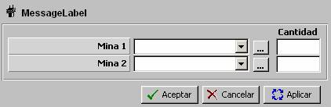
Cargas de Profundidad: Esta instalación es exclusiva para unidades de superficie y determina las cargas de Profundidad que pueden ser lanzadas por la unidad. Ver apartado Cargas de Profundidad. A continuación se describe cada uno de los campos de la ventana.
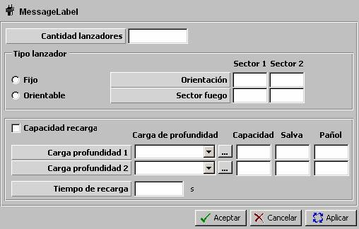
Cantidad Lanzadores: Este parámetro determina el número de lanzadores que compone el sistema de lanzamiento de Cargas de Profundidad.
Unidades: ---
Rango: 1 – 2
Fijo / Orientable: Este parámetro determina si el lanzador de cargas es Orientable, en cuyo caso se especifican dos sectores de fuego o Fijo, en cuyo caso se especifican dos orientaciones fijas.
Orientación (Sector 1 y 2): Esta parámetro determina las orientaciones en las que puede hacer fuego el lanzador de cargas.
Unidades: grados
Rango: 0 – 359
Sector Fuego (Sector 1 y 2): Esta parámetro determina los sectores centrados en la orientación correspondiente en las que puede hacer fuego el lanzador de cargas. Esta parámetro sólo puede ser introducido si se ha seleccionado Orientable.
Unidades: grados
Rango: 0 – 360
Capacidad de Recarga: Este parámetro determina si el sistema de lanzamiento de Cargas de Profundidad tiene capacidad de recarga desde el pañol de la unidad.
Carga de Profundidad (1 a 2): Tipos de cargas disponibles en el pañol de la unidad. Coincide con lo mostrado en el área de Cargas de Profundidad de la ventana de Configuración de Unidad.
Cantidad (1 a 2): Cantidad de cargas del tipo correspondiente cargado inicialmente en los lanzadores del sistema de lanzamiento de Cargas de Profundidad. Coincide con lo mostrado en el área de Cargas de Profundidad de la ventana de Configuración de Unidad.
Unidades: ---
Rango: 0 – 99
Salva (1 a 2): Cantidad de cargas que componen una salva predeterminada del tipo correspondiente de Cargas de Profundidad.
Unidades: ---
Rango: 0 – 99
Pañol (1 a 2): Cantidad de cargas del tipo correspondiente disponibles en el pañol de la unidad. Sólo podrá ser introducido si se ha seleccionado Capacidad de Recarga.
Unidades: ---
Rango: 0 – 99
Tiempo de Recarga: Tiempo requerido para recargar un lanzador vacío. Sólo podrá ser introducido si se ha seleccionado Capacidad de Recarga.
Unidades: segundos
Rango: 0 – 999
Tubos de Torpedos: Esta instalación es exclusiva en unidades de superficie y submarinas, siendo además diferente para cada una de ellas. Las unidades aéreas y helicópteros también tienen la posibilidad de instalar Torpedos, pero lo hacen de una forma diferente. A continuación se describe cada uno de los campos de esta ventana.
Tubos de Torpedos en Unidades de Superficie: Para las unidades de superficie la configuración del sistema de lanzamiento de torpedos se realiza rellenando los campos que se describen a continuación.
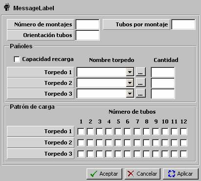
Número de Montajes: Esta parámetro determina el número de montajes que compone el sistema de lanzamiento de torpedos.
Unidades: ---
Rango: 2 ó 4
Tubos por Montaje: Esta parámetro determina el número de tubos instalados en cada montaje del lanzador.
Unidades: ---
Rango: 1 – 3
Orientación Tubos: Esta parámetro determina la orientación simétrica de los montajes de los tubos, referida a la proa del buque.
Unidades: grados
Rango: 0 – 180
Ejemplo:
Lanzador en dos montajes de tres tubos
orientados 45º a babor y estribor.
Capacidad de Recarga: Este parámetro determina si el sistema de lanzamiento de torpedos tiene capacidad de recarga desde el pañol de la unidad.
Pañoles:
Torpedo (1 a 3): Tipos de torpedos disponibles en el pañol de la unidad. Coincide con lo mostrado en el área de torpedos de la ventana de Configuración de Unidad.
Cantidad (1 a 3): Cantidad de torpedos del tipo correspondiente disponibles en el pañol de la unidad. Coincide con lo mostrado en el área de torpedos de la ventana de Configuración de Unidad.
Unidades: ---
Rango: 0 – 99
Patrón de Carga: Mediante esta matriz se especifica el tipo de torpedo cargado inicialmente en cada tubo del montaje, hasta un máximo de 12 tubos ( = 4 montajes x 3 tubos).
Tubos de Torpedos en Unidades Submarinas: Para las unidades submarinas la configuración del sistema de lanzamiento de torpedos se realiza rellenando los campos que se describen a continuación.
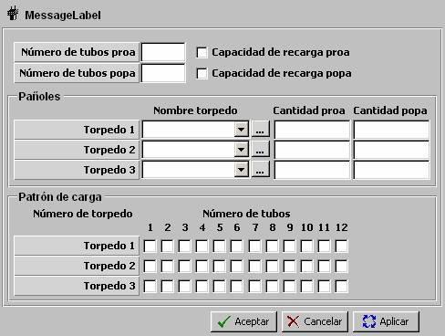
Número de Tubos Proa: Este parámetro determina el número de tubos en proa del sistema de lanzamiento de torpedos.
Unidades: ---
Rango: 0 – 8
Número de Tubos Popa: Este parámetro determina el número de tubos en popa del sistema de lanzamiento de torpedos.
Unidades: ---
Rango: 0 – 4
Capacidad de Recarga (Proa y Popa): Este parámetro determina si el sistema de lanzamiento de torpedos tiene capacidad de recarga desde el pañol de la unidad.
Pañoles:
Torpedo (1 a 3): Tipos de torpedos disponibles en los pañoles de proa y popa de la unidad. Coincide con lo mostrado en el área de torpedos de la ventana de Configuración de Unidad.
Cantidad Proa (1 a 3): Cantidad de torpedos del tipo correspondiente disponibles en el pañol de proa de la unidad. Coincide con lo mostrado en el área de torpedos de la ventana de Configuración de Unidad.
Unidades: ---
Rango: 0 – 99
Cantidad Popa (1 a 3): Cantidad de torpedos del tipo correspondiente disponibles en el pañol de popa de la unidad.
Unidades: ---
Rango: 0 – 99
Patrón de Carga: Mediante esta matriz se especifica el tipo de torpedo cargado inicialmente en cada tubo del montaje, hasta un máximo de 12 tubos ( = 8 de proa + 4 de popa). Los tubos orientados a proa comenzarán por la numeración más baja y los tubos de popa estarán numerados consecutivamente a los de proa.
Lanzadores de Misiles: Se pueden instalar lanzadores de misiles en todos los tipos de unidad, aunque en el caso de las aéreas y helicópteros, esta instalación de realiza de una forma diferente. En esta área de datos se especifican todos los lanzadores de misiles instalados en la unidad. El número de lanzadores a instalar varía dependiendo del tipo de unidad donde vayan a ser instalados. Para cada tipo de misil deberá elegirse el nombre del arma (de la lista de misiles disponible), el tipo de lanzador (Fijo, Orientable o Vertical), la orientación en la que se instala, el sector que cubre, la cantidad de munición disponible en la unidad, y si el lanzador tiene capacidad de modo automático de disparo antiaéreo.
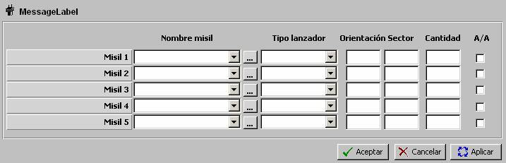
El Sector de Fuego del lanzador será como sigue, según su tipo:
- Fijo: Sólo se podrá introducir Orientación, y el Sector de Fuego del lanzador será:
Sector de Fuego = Orientación + / - Capacidad OFF AXIS - Orientable: Se podrá introducir Orientación y Sector y el Sector de Fuego será:
Sector de Fuego = Orientación + / - Sector + / - Capacidad OFF AXIS en cada limite - Vertical: Sólo se podrá introducir Orientación y el Sector se rellenará automáticamente con valor 360º. En este caso el Sector de Fuego del lanzador será:
Sector de Fuego = Sector = 360º
Engaños: Esta opción agrupa una serie de contramedidas que pueden instalarse en todas las unidades, de acuerdo con las tablas de instalación de equipos en unidades, y excepto en aéreas y helicópteros, donde la ordenación de estos datos es diferente. Estas contramedidas son Infrarrojo, ECM, Productor de Ruido, y Señuelos. En esta área de datos se especifican todos los equipos de este tipo instalados en la unidad. Para todos los equipos deberá elegirse el nombre de la lista de equipos disponibles de cada tipo.
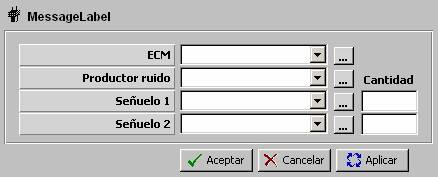
Artillería: Se pueden instalar cañones en todos los tipos de unidad, aunque en el caso de las aéreas y helicópteros, esta instalación de realiza de una forma diferente. En esta área de datos se especifican todos los cañones instalados en la unidad. El número de cañones a instalar varía dependiendo del tipo de unidad donde vayan a ser instalados. Para cada cañón deberá elegirse el nombre del arma (de la lista de cañones disponible), la orientación en la que se instala, el sector que cubre y la cantidad de munición disponible en la unidad.
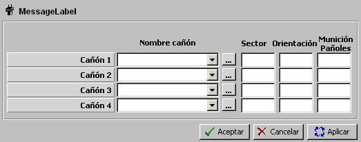
Sector: Este parámetro determina los sectores centrados en la orientación correspondiente en las que puede hacer fuego el cañón.
Unidades: grados
Rango: 0 – 360
Orientación: Este parámetro determina la orientación del cañón.
Unidades: grados
Rango: 0 – 359
Munición Pañol: Cantidad de munición del cañón correspondiente disponibles en el pañol de la unidad.
Unidades: ---
Rango: 0 – 90000
ASROC: Se pueden instalar Torpedos ASROC en unidades de superficie. A continuación se describe cada uno de los campos de la ventana correspondiente.
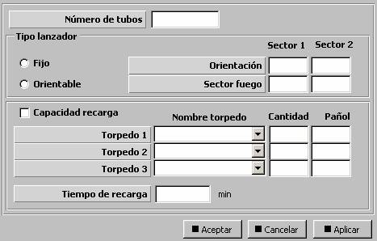
Número de Tubos: Este parámetro determina el número de tubos del sistema de lanzamiento de torpedos ASROC.
Unidades: ---
Rango: 1 – 8
Fijo / Orientable: Este parámetro determina si el lanzador de torpedos ASROC es Orientable, en cuyo caso se especifican dos sectores de fuego o Fijo, en cuyo caso se especifican dos orientaciones fijas.
Orientación (Sector 1 y 2): Este parámetro determina las orientaciones en las que puede hacer fuego el lanzador de torpedos ASROC.
Unidades: grados
Rango: 0 – 359
Sector Fuego (Sector 1 y 2): Este parámetro determina los sectores centrados en la orientación correspondiente en las que puede hacer fuego el lanzador de torpedos ASROC. Esta parámetro sólo puede ser introducido si se ha seleccionado Orientable.
Unidades: grados
Rango: 0 – 360
Capacidad de Recarga: Este parámetro determina si el sistema de lanzamiento de torpedos tiene capacidad de recarga desde el pañol de la unidad.
Torpedo (1 a 3): Tipos de torpedos disponibles en el pañol de la unidad. Coincide con lo mostrado en el área de ASROC de la ventana de Configuración de Unidad.
Cantidad (1 a 3): Cantidad de torpedos del tipo correspondiente cargado inicialmente en los tubos del lanzador ASROC. La suma de las tres cantidades debe ser menor o igual que el número de tubos. Coincide con lo mostrado en el área de ASROC de la ventana de Configuración de Unidad.
Unidades: ---
Rango: 0 – 99
Pañol (1 a 3): Cantidad de torpedos del tipo correspondiente disponibles en el pañol de la unidad. Sólo podrá ser introducido si se ha seleccionado Capacidad de Recarga.
Unidades: ---
Rango: 0 – 99
Tiempo de Recarga: Tiempo requerido para recargar un tubo vacío. Sólo podrá ser introducido si se ha seleccionado Capacidad de Recarga.
Unidades: segundos
Rango: 0 – 999
Sensores Aéreos: En el caso de las de las unidades aéreas y helicópteros, la instalación de sensores se realiza desde una ventana que agrupa todos los sensores de la unidad. En esta área de datos se especifican los nombres de los sensores, y en su caso, la orientación en la que se instalan y el sector que cubren. También se especifica la instalación del AIS, TACAN e IFF, con los mismos campos que se describen en la instalación de estos equipos en las otras unidades.
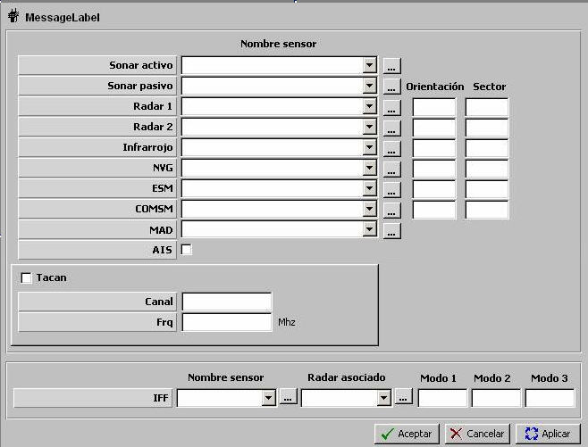
Armas Fijas Aéreas: En el caso de las de las unidades aéreas y helicópteros, la instalación de armas se hace de dos formas. Existe un conjunto de armas fijas, cuya instalación se describe aquí, y un conjunto de armas variables, que pueden modificarse durante el ejercicio mediante reconfiguración de armas de la unidad. Estas armas fijas son un cañón, un equipo de ECM y dos lanzadores de Chaff. Para instalarlos en la unidad debe seleccionarse el nombre del arma de la lista de armas disponibles de cada tipo, y además, para el ECM debe introducirse orientación y sector y para los chaffs, la cantidad de cada cartucho y la salva.
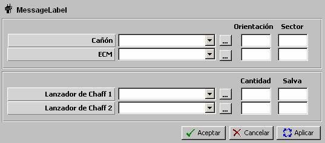
Sonoboyas: Esta instalación es exclusiva para las unidades aéreas y helicópteros. A continuación se describen los campos de la ventana correspondiente a esta instalación.
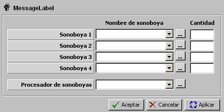
Sonoboyas: Sonoboyas que pueden ser lanzadas por la unidad. Ver apartado Sonoboya.
Cantidad: Cantidad de sonoboyas del tipo correspondiente que lleva la unidad.
Unidades: ---
Rango: 0 – 999
Procesador Sonoboyas: Equipo Procesador de Sonoboyas que instala la unidad. Ver apartado Procesador de Sonoboyas.
Configuración de Armas Aéreas: Esta opción es exclusiva para unidades aéreas y especifica las distintas configuraciones de armas que pueden ser instaladas en una unidad aérea (Avión o Helicóptero). Ver apartado Configuración de Armas Aéreas. Estas configuraciones pueden ser cargadas en las unidades cuando están en base. Para cada configuración de armas se define un tiempo en minutos requerido para adoptar dicha configuración.
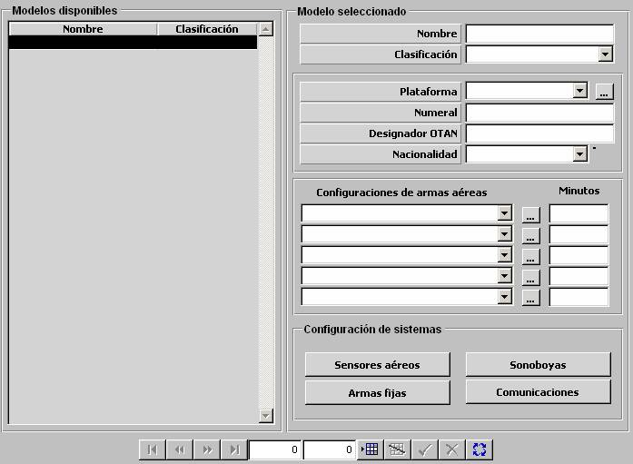
Se comprobará que el máximo peso que puede soportar la unidad es superior al peso de cada una de las configuraciones, y en caso contrario se presentará un aviso. Se considera la primera configuración como la cargada inicialmente por la unidad. Si algún nombre de configuración se queda vacío, considerar una configuración VACIA como posible.
Equipos en Mástiles: Esta opción es exclusiva para unidades submarinas y en este diálogo se muestra la lista de equipos instalados en la unidad y una matriz para asignarles los mástiles, de entre los definidos para la plataforma, en los que se instala su antena. Aquellos equipos que tengan algún mástil asociado, podrán operar cuando el submarino se encuentre sumergido y con alguno de sus mástiles asociados izado.